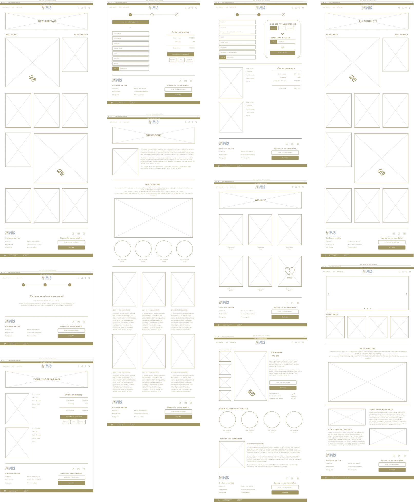
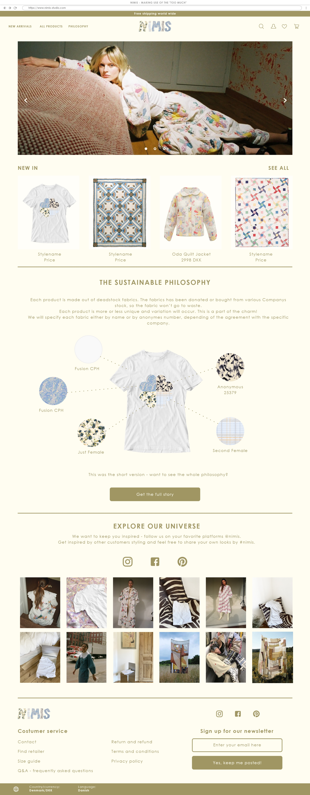

Tema 3 - Grundlæggende UX
Prototype 2
Hvad gik opgaven ud på?
Denne opgave gik ud på at vi skulle blive bedre bekendt med Adobe XD og dets mange muligheder for at lave et realistisk udkast til et website og få testet af andre.
Jeg var så glad for at lave den her opgave fordi den gav mig tid til at virkelig forstå et program som jeg allerede følte mig lidt introduceret til fra opgaven med det responsive site.
Opgaven øvede os ligeledes i at researche og teste, og mundede ud i et ret gennemarbejdet udkast til et site.
Reflektion
Som skrevet ovenfor syntes jeg at det var et utroligt sjovt og spændende projekt. Først og fremmest gav det mig en ro i at jeg kan bruge Adobe XD effektivt og kender til den smarte funktion med desktop preview.
Jeg synes også at det var rigtig interessant med alle de snakke vi havde i klassen om online shopping vaner, som viste sig at være langt mere skrøbelig end jeg havde regnet med! Folk springer hurtigt fra, så snart det bliver klundet.
Det endelige produkt jeg endte med at lave var jeg rigtig glad for og stolt af, fordi jeg synes at det blev lavet i sådan en fin og undersøgende proces, der endte med et, synes jeg, æstetisk fintn resultat!
Mit koncept
Med tanke på mine tidligere jobs som designer samt mit daværende (og nuværende) job hos et print-firma, kom jeg på idéen om at skabe et produkt ud af left-over fabrics fra andre virksomheder.
Produkterne skulle være smukke unikaprodukter, som altså bestod af materialer der allerede var produceret; altså ingen produktion af nye materialer.
Interview & survey
Vi gik i gang med en masse search hvor jeg interviewede min veninde Leslie, som jeg følte kunne være en god stemme for min målgruppe. I interviewet fik jeg klarlagt hendes online shopping vaner og de bump på vejen der kan stoppe hende fra at købe.
Derudover lavede jeg en survey hvor jeg havde bedt kvinder fra min omgangskreds udfylde lignende undersøgelse omkring deres shopping vaner.
Efter både interview og survey, reflekterede jeg over hvordan mit arbejde havde været, og jeg fandt ud af at jeg skal blive bedre til at lade den interviewede tale og at jeg i surveyen havde tendens til at farve svarmulighederne en smule.
Design sprint
Efter at have fået bedre styr på min målgruppe var jeg klar til at udforske designet. Her øvede vi nogle forskellige tilgange og måde at lave en kreativ proces på. Vi lavede lightning demo, Crazy 8 og solution sketch.
For mig var det rigtig fedt at prøve nogle kreative tilgange af, fordi jeg ofte har tendens til at ville hurtigt til målet og springe nogle af de sjovere led over, som jo faktisk også er dem der giver nogle uventede og mere interessante løsninger.
Moodboard & styletile
Næste skridt var at lave et Moodboard for at få noget retning på farver, former og stemning. Mit modboard skulle være lyst, venligt, feminint, varmt og inkluderende.
Herefter konkretiserede jeg det med et styletile, der specificerede typografien, farverne, logo og ikon. Logoet og ikonet lavede jeg i Illustrator.
Lofi prototype
Dernæst lavede jeg en lofi prototype, som viste hvordan mine sider skulle opbygges og hvilket indhold der skulle være.
Resultatet - hifi prototype
Til sidst lavede jeg en hifi prototype, der byggede på alle de foregående processer og undersøgelser. Prototypen virkede delvist i Adobe XD's deesktop preview, hvilket gjordet det muligt at teste den.
Efter at have fået et par personer fra klassen til at teste den, lavede jeg nogle mindre justeringer, så de områder mine testpersoner havde fundet trælse, blev udbedret.
